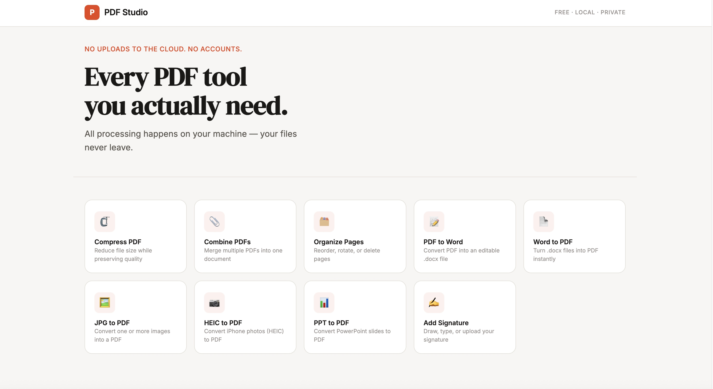

Here’s a question worth asking the next time you need to shrink a PDF before emailing it: where does that file actually go?
If you use Smallpdf, iLovePDF, or any of the dozen PDF websites that rank on Google, the answer is someone else’s server. You upload your file, their software processes it, and you download the result — assuming you haven’t hit a daily limit or a paywall first. For a grocery list, that’s a non-issue. For a signed lease, a tax return, a medical record, or a client contract, it’s a quiet trade-off most people never think to question.
The other “solution” is Adobe Acrobat, which does keep things closer to home but charges roughly $20 a month for the privilege — a subscription that, over a few years, costs more than most people’s laptops.
Neither option should be the only choice for something as basic as combining two PDFs or rotating a page.
A PDF toolkit that runs entirely on your Mac
PDF Studio is a native Mac app that bundles nine of the most commonly needed PDF tools into one free, local program:
- Compress PDF — shrink file size by up to 80% with three quality presets
- Combine PDFs — merge multiple files into one
- Organize Pages — drag to reorder, rotate, or delete pages with live thumbnails
- PDF to Word — convert a PDF into a fully editable .docx
- Word to PDF — turn a .docx into a PDF instantly
- JPG to PDF — combine one or more photos into a PDF
- HEIC to PDF — convert iPhone photos straight to PDF, no format conversion needed first
- PPT to PDF — turn PowerPoint slides into a PDF
- Add Signature — draw, type, or upload a signature and stamp it onto any page
That covers the vast majority of what people actually do with PDFs day to day — without a subscription, a usage cap, or a server in between.
The key design decision is what PDF Studio doesn’t do: no account, no credit card, no file ever sent anywhere. Every conversion, compression, and signature happens locally, using the same open-source engines — Ghostscript and LibreOffice — that professional tools rely on, just bundled directly into the app.
It’s also fully open source. The entire codebase is public on GitHub, which means anyone can verify exactly what the app does with their files — not just take a privacy policy’s word for it.
Get it running in three steps
No Terminal, no developer tools, no Python install. If you can install any normal Mac app, you can install this.
- Download the latest PDF Studio.dmg from the GitHub releases page
- Open the file and drag PDF Studio into your Applications folder
- Launch PDF Studio from Launchpad, exactly like any other app
That’s the whole installation. Ghostscript and LibreOffice are already packaged inside the app, so there’s nothing else to download.
One thing you will see on first launch: macOS will say “PDF Studio can’t be opened because it is from an unidentified developer.” This isn’t a red flag — it simply means the app wasn’t signed with a paid $99/year Apple Developer certificate, the way a free, independent project usually isn’t. To get past it once: right-click the app → Open → Open. macOS won’t ask again after that.
Download PDF Studio →Common questions before you install
Is it actually free, with no catch?
Yes. No premium tier, no file-size cap, no daily limit, no account wall. It’s free because it’s open source.
Is it safe to open an app from an “unidentified developer”?
That warning is standard for any Mac app not distributed through the App Store or signed with a paid Apple certificate. Because the project is open source, anyone can inspect exactly what the code does before running it — more transparency than most paid PDF tools offer.
Does any of my file data get uploaded anywhere?
No. Every tool runs as a local process on your own Mac. There’s no network call involved in processing your files — that’s the entire point of building it this way.
Does it work on Windows or Linux?
Not yet — the packaged app is currently macOS-only. The underlying Flask app can be run from source on other platforms by developers, with setup instructions in the GitHub repo.
PDF Studio is live, free, and ready to download right now. Browse the full source, request a feature, or star the repo on GitHub — it helps other people find a free alternative too.
View on GitHub →